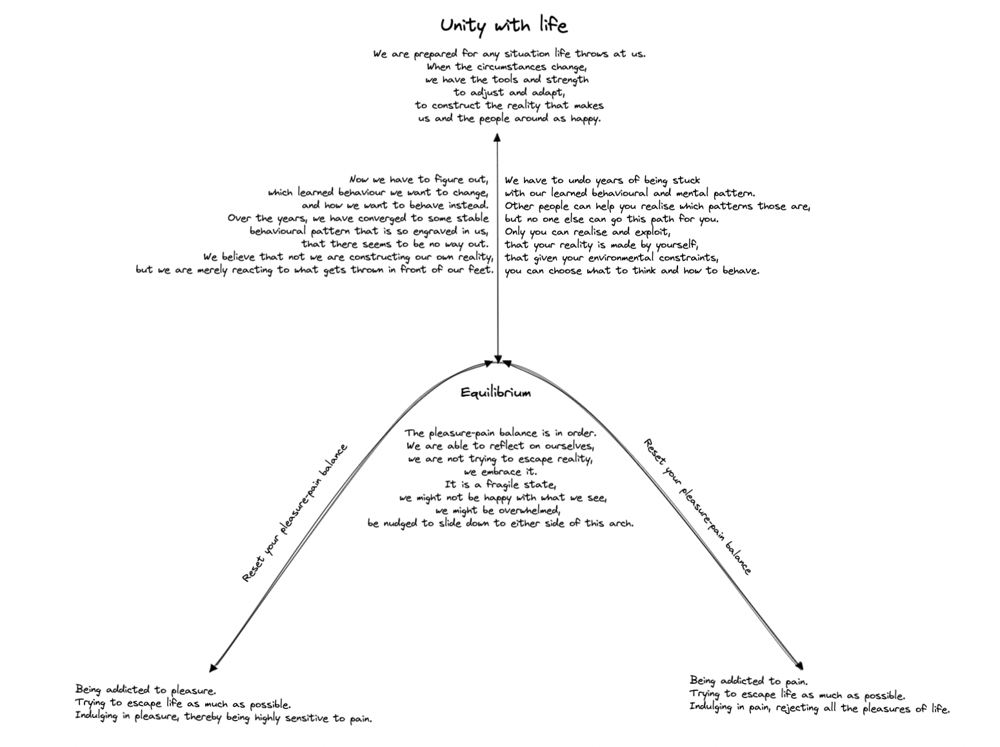

For many years I have been thinking about how it can be that there are certain types of personalities. During my path, I came across many potential explanations:
I was recommended to read the book "The selfish gene". I have read in its reviews that people saw their world in shards after reading the book, because understanding that the only immortal entity in this world is a gene, and that the only purpose of the gene is to replicate, seems nihilistic to some people and takes away their life's purpose. Me personally, I enjoyed this book greatly, and it makes a whole lot of sense that this is how we evolved. After finishing the book, I still had this one lingering question unanswered: If two people have the same genes, and they are born at the same time (twins), how can it be that they end up with two different personalities? The theory of astrology would predict that they have the same personality, but looking at the evidence, that just can’t be. The gene theory does not have an answer to this question either.
I came across the book "How emotions are made". It is a book that explores the science of emotions and how they are generated by the brain. Barrett argues that emotions are not hardwired into our brain and that they are constructed by our brain based on our experiences and cultural upbringing. The book presents a new model of emotions that challenges traditional views of emotions and offers a more nuanced understanding of how emotions are experienced and expressed. And suddenly, just as the gene theory had made so much sense in explaining how the homo sapiens evolved, this theory made all the loose bits and pieced I had flying around in my head come together.
